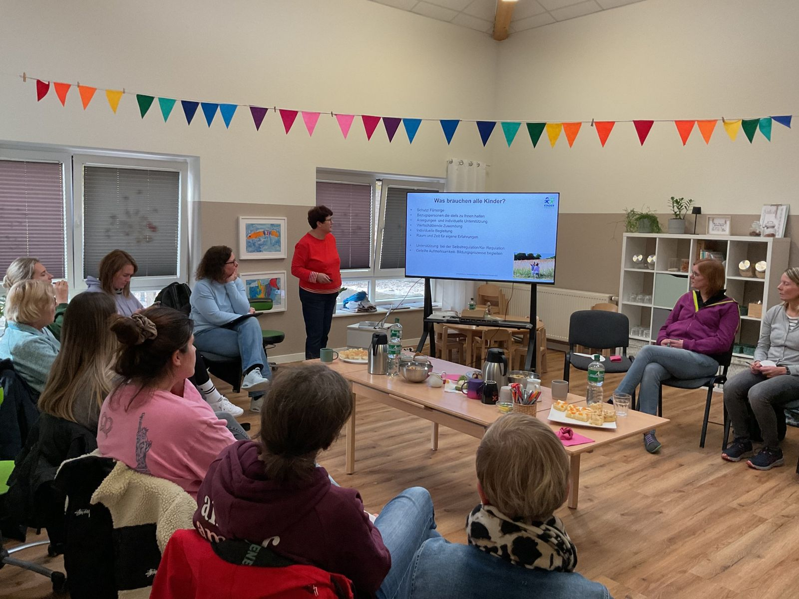

Herausforderndes Verhalten von Kindern erkennen, verstehen und achtsam begleiten
Fortbildung des KSB Coesfeld mit Mitarbeiterinnen und Einrichtungsleiterinnen der Anerkannten Bewegungskindergärten. Als Referentin vermittelte Martina Rathmann das Thema kompetent, praxisnah und mit vielen wertvollen Impulsen. Dabei ging es nicht nur um theoretische Grundlagen, sondern vor allem um die Frage, wie pädagogische Fachkräfte herausfordernde Situationen im Kita-Alltag verstehen, reflektieren und angemessen begleiten können.
Neben fachlichen Informationen standen praktische Methoden und konkrete Handlungsmöglichkeiten im Mittelpunkt. Die Teilnehmerinnen brachten eigene Erfahrungen aus dem Kita-Alltag ein, betrachteten Situationen gemeinsam und lernten unterschiedliche Perspektiven kennen. Durch den offenen Austausch entstanden zahlreiche Anregungen für die tägliche pädagogische Arbeit.